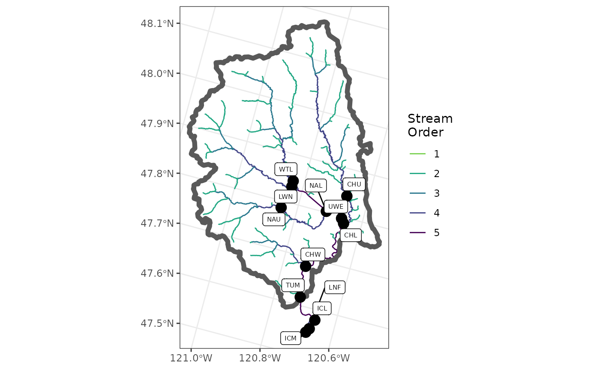
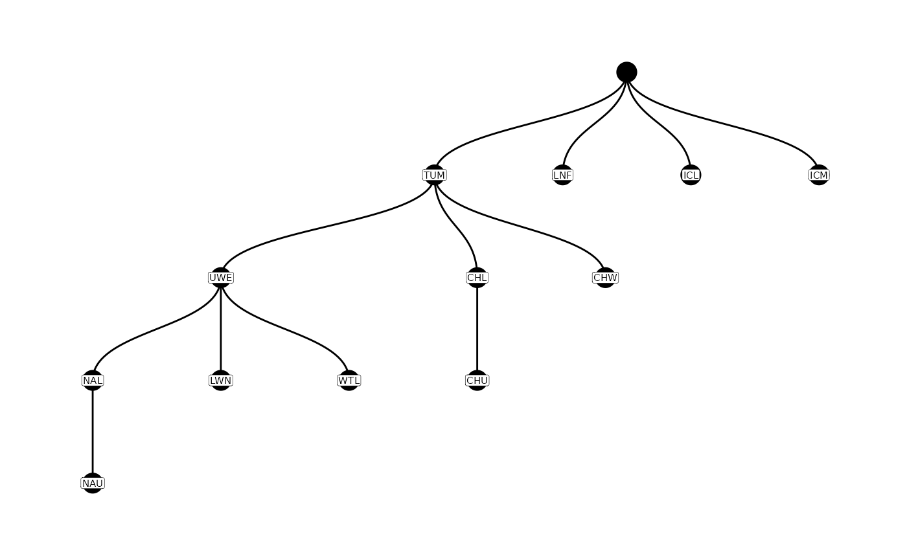

When dealing with detections of individual tags, the user often is interested in which locations are connected to which other locations along the stream network. One way to capture this information is through the construction of a parent-child table describing the “relationships” among locations. In a parent-child table, each row consists of a parent location, and a child location that is connected directly to that parent location. By default, PITcleanr assigns parent-child relationships as moving in an upstream direction, so a single parent may have multiple child locations upstream, if the stream network branches upstream of it. However, each child should only have a single parent, as we are assuming a lack of looped connections in our stream network. If the user is interested in a downstream parent-child relationship, the parent and child designations in the table can be manually switched. As an example, assuming only upstream movement, a weir may be considered a parent and each of its next upstream arrays considered children. A location with no detection sites further upstream has no children, but is presumably the child of a downstream location. All of the parent-child relationships among locations in a watershed can describe the potential movements by an individual tag (moving from parent to child, to the next child, etc.).
For example, in the Wenatchee River example, the parent-child table looks like this.
parent_child
#> # A tibble: 13 x 2
#> parent child
#> <chr> <chr>
#> 1 PES PEU
#> 2 ICL LNF
#> 3 ICL ICM
#> 4 ICM ICU
#> 5 TUM PES
#> 6 TUM ICL
#> 7 TUM CHW
#> 8 TUM CHL
#> 9 TUM NAL
#> 10 TUM WTL
#> 11 TUM LWN
#> 12 CHL CHU
#> 13 NAL NAUPITcleanr can plot these relationships graphically, showing the relationships between parent and child sites and which ones are connected along a single “path”. This is done using the plotNodes() function.
A user can construct a parent-child table by hand, using a .csv file with column names parent and child. Each line in the figure above is represented by one row in the parent-child table listing the parent site and child site. If the user is interested in upstream movement, the parent will be the downstream site, and every child will have a single parent (although a parent may have multiple children sites). If the interest is in downstream movement, then the parent will be the upstream site.
When dealing with large number of sites, and many possible connections, it can be useful to take advantage of some of PITcleanr’s functions to construct a parent-child table. These functions include:
extractSites(): based on the complete tag history (either file path and name, or the result of readCTH()), pulls out which sites had detections. If sites are not in PTAGIS, a configuration file should be supplied with latitude and longitudes.queryFlowlines(): using an sf point object of sites, queries the NHDPlusv2 stream layers that connect those sites.buildParentChild: Based on the output from extractSites() and queryFlowlines(), this function constructs the parent-child table using information in the NHDPlusv2 layer about which hydrosequences are downstream of one another.PITcleanr constructs the parent-child relationship by joining a spatial (sf) point object of sites with the flowlines queried via queryFlowlines(). The NHDPlus layer that is returned contains a unique identifier, or hydrosequence, for every segment, as well as the identifier of the hydrosequence immediately upstream and downstream. Using this information, PITcleanr can identify the next downstream site from every known location (using the findDwnstrmSite() function), and thus construct the parent child table through the buildParentChild() function. By default, buildParentChild() returns a tibble identifying every parent-child pair, as well as the hydrosequence joined to the parent and child location. If the argument add_rkm is set to TRUE, PITcleanr will query the PTAGIS metadata again, and attach the river kilometer (or rkm) for each parent and child location. If the sites are not in PTAGIS, the user can join any attributes they wish using their own configuration file.
cth_file = system.file("extdata",
"TUM_Chinook_2015.csv",
package = "PITcleanr",
mustWork = TRUE)
cth_df <- readCTH(cth_file)The queryPtagisMeta() and buildConfig() functions in PITcleanr return information from all INT and MRR sites in PTAGIS. However, the user may only be interested in detections from site codes found within their complete tag history output, e.g., your cth_file. The extractSites() function does just that: extracts the site codes found in the complete tag history. In addition, the detections can be filtered by a minimum and/or maximum detection date, and the results are returned as either a tibble, or as a simple (spatial) feature sf object. Setting the min_date argument could be useful if the user is not interested in detections at sites prior to your study period e.g., detections that occur prior to fish arriving at your tagging or release location.
In this example, we create a new object sites_sf, return it as an sf object (by setting as_sf = T) and only return sites from those detections that occurred after May 1, 2015. We also extract sites only from the Wenatchee subbasin and remove a couple sites that we perhaps don’t care about. More information on simple features (sf objects) can be found here.
sites_sf = extractSites(cth_file,
as_sf = T,
min_date = "20150501")
# focus on sites within Wenatchee subbasin, and drop a few sites we don't care about
sites_sf <- sites_sf %>%
# all sites in the Wenatchee have a river kilometer that starts with 754
filter(str_detect(rkm, "^754."),
type != "MRR",
site_code != "LWE") |>
mutate(across(site_code,
~ recode(.,
"TUF" = "TUM")))The user could create their own sf object of detection sites, either by hand in R, or by using GIS software to create a shapefile or geopackage that can then be read into R using the st_read() function in the sf package. If the user chooses this path, the file must contain at least a column called site_code, whose values should be the same site codes found in the configuration file. Other columns are optional. The extractSites() function returns an sf object with the following columns (gleaned from the configuration file):
site_codesite_namesite_typetyperkmsite_descriptionextractSites() will also accept a configuration file as an argument, if the user wants to pass one of their own in. Such a file should contain all the columns listed above.
The user may also be interested in getting the flowlines (i.e., the stream or river network), for their sites of interest. PITcleanr provide the function queryFlowlines() to accomplish that. queryFlowlines() downloads an NHDPlus v2 stream layer from USGS using the suggested nhdplusTools R package. It requires the spatial location of sites as an sf object (such as the output of extractSites()), and a site code identified as the “root” site. The root site might correspond with your tagging or release location and is provided to the root_site_code argument. The function starts from the root_site_code and downloads all flowlines upstream from there, with a minimum stream order set by min_strm_order.
If flowlines downstream of the root_site_code site are required, set the argument dwnstrm_sites = TRUE (default is FALSE). This might be useful if the user is interesting in analyzing or modeling sites downstream of the release site. If you’re not interested in analyzing/modeling downstream sites you can set dwnstrm_sites = FALSE which may speed up the function considerably.
The user can also control the minimum stream order of the downstream flowlines by setting the dwn_min_stream_order_diff argument. Note: smaller stream orders correspond to smaller streams. This can be useful if the user is not interested or wants to prevent downloading all sorts of tiny streams downstream of a tagging or release location; the dwn_min_stream_order_diff is an attempt to constrain the amount of flowlines downloaded downstream of the root_site_code which can be sizable. The dwn_min_stream_order_diff corresponds to the difference between the stream order of the root_site_code site and the minimum stream order desired in the downstream flowlines. In our example, our root_site_code is located on a stream order of 5 (Wenatchee River) and dwn_min_stream_order_diff = 2, in this case only downstream flowlines of at least 5-2 = 3 will be downloaded. The extent of the downstream flowlines is further constrained by the sites_sf object. The queryFlowlines() function returns a list consisting of:
flowlines: the flowlines upstream of the root_site_code
basin: the polygon containing the upstream flowlinesdwn_flowlines: the flowlines downstream of the root_site_code, if dwnstrm_sites = T
Depending on the spatial extent of your flowlines, the queryFlowlines() function may take awhile. Here we create a list of objects, nhd_list. We then use the function rbind() to combine the nhd$flowlines and nhd$dwn_flowlines into a single flowlines simple feature object. More information on the nhdplusTools R package can be found here.
# query the flowlines
nhd_list = queryFlowlines(sites_sf = sites_sf,
root_site_code = "TUM",
min_strm_order = 2,
dwnstrm_sites = T,
dwn_min_stream_order_diff = 2)
#> Querying streams upstream of TUM
#> Calculating furthest mainstem point downstream
#> Querying streams downstream of TUM
# join the upstream and downstream flowlines
flowlines = nhd_list$flowlines %>%
rbind(nhd_list$dwn_flowlines)To visualize the sites and stream, the user can make a plot, such as the one in Figure @ref(fig:fig-basin-map)
library(ggplot2)
ggplot() +
geom_sf(data = flowlines,
aes(color = as.factor(StreamOrde),
size = StreamOrde)) +
scale_color_viridis_d(direction = -1,
option = "D",
name = "Stream\nOrder",
end = 0.8) +
scale_size_continuous(range = c(0.2, 1.2),
guide = 'none') +
geom_sf(data = nhd_list$basin,
fill = NA,
lwd = 2) +
geom_sf(data = sites_sf,
size = 4,
color = "black") +
ggrepel::geom_label_repel(
data = sites_sf,
aes(label = site_code,
geometry = geometry),
size = 2,
stat = "sf_coordinates",
min.segment.length = 0,
max.overlaps = 50
) +
theme_bw() +
theme(axis.title = element_blank())
Once the user has an sf object with the spatial locations of their sites, and a NHDPlusv2 layer of flowlines, they can use the buildParentChild() function to construct a parent-child table.
parent_child = buildParentChild(sites_sf,
flowlines)
#> Error in findDwnstrmHydroseg(hydro_dn, flow_lines, hydro_pause_ids) :
#> HydroSeq 50016572 not found within flow lines.
#>
#> Error in findDwnstrmHydroseg(hydro_dn, flow_lines, hydro_pause_ids) :
#> HydroSeq 50011492 not found within flow lines.
parent_child
#> # A tibble: 13 x 4
#> parent child parent_hydro child_hydro
#> <chr> <chr> <dbl> <dbl>
#> 1 PES ICL 50011578 50012366
#> 2 ICL TUM 50012366 50013200
#> 3 ICL ICM 50012366 50017117
#> 4 TUM UWE 50013200 50018330
#> 5 TUM CHL 50013200 50022268
#> 6 TUM CHW 50013200 50045832
#> 7 UWE LWN 50018330 50021585
#> 8 UWE WTL 50018330 50026363
#> 9 UWE NAL 50018330 50028949
#> 10 CHL CHU 50022268 50023868
#> 11 NAL NAU 50028949 50034395
#> 12 NA PES NA 50011578
#> 13 NA LNF NA 50016752After initially building a parent-child table, there is usually some editing that needs to happen. This is necessary for a variety of reasons we’ve observed:
For these reasons (or any others), PITcleanr provides a function to edit the parent-child table, editParentChild(). It requires a list the length of rows to be fixed (fix_list). Each element of this list is a vector of length 3, where the first two elements contain the parent and child locations to be edited, and the third element is the new (correct) parent location. As each child contains a single parent in the table, this is enough information to uniquely target individual rows of the parent-child table.
The user can also switch parent-child pairs, making the parent the child and vice versa, using the switch_parent_child argument. This is primarily intended to fix relationships between a root site and the initial downstream sites. If, by default, the parent child table is built assuming upstream movement, but the user would like to incorporate downstream movement from the root site to a location downstream, this argument will be useful. However, it will not “fix” associated parent-child relationships with the locations in the switch_parent_child list; those must be fixed through the fix_list argument.
Often, a good place to start will be to examine the current parent-child relationships using the function plotNodes(). This can help visually identify pathways that need editing.
plotNodes(parent_child)
From the figure above, the original parent-child table has some problems with 2 sites (ICL and PES) downstream of the root site, TUM. In addition, the flowlines are not accurate near the LNF site, or the spatial location of that site is incorrect. We would like to make TUM the parent of both ICL and PES, and ICL should be the parent of LNF. All of these corrections are implemented below using the editParentChild() function.
parent_child = editParentChild(parent_child,
fix_list = list(c(NA, "PES", "TUM"),
c(NA, "LNF", "ICL"),
c("PES", "ICL", "TUM")),
switch_parent_child = list(c("ICL", 'TUM')))
# view corrected parent_child table
parent_child
#> # A tibble: 12 x 4
#> parent child parent_hydro child_hydro
#> <chr> <chr> <dbl> <dbl>
#> 1 ICL LNF 50012366 50016752
#> 2 ICL ICM 50012366 50017117
#> 3 TUM PES 50013200 50011578
#> 4 TUM ICL 50013200 50012366
#> 5 TUM UWE 50013200 50018330
#> 6 TUM CHL 50013200 50022268
#> 7 TUM CHW 50013200 50045832
#> 8 UWE LWN 50018330 50021585
#> 9 UWE WTL 50018330 50026363
#> 10 UWE NAL 50018330 50028949
#> 11 CHL CHU 50022268 50023868
#> 12 NAL NAU 50028949 50034395If the configuration file contains multiple nodes for some sites (e.g., a node for each array at a site), then the parent-child table can be expanded to accommodate these nodes using the addParentChildNodes() function. The function essentially “expands” (adds rows) to the existing parent-child table to accommodate those additional nodes. Note: the addParentChildNodes() function assumes that the parent-child table is arranged so that children are upstream of parents, and nodes designated as A0 are upstream of those designated B0. Currently, the function can only handle up to two nodes at each site.
Here, we use the addParentChildNodes() function on our existing parent_child table, and provide our existing configuration tibble to the configuration argument to expand the tibble. Our results are saved to a new object parent_child_nodes.
# read in configuration file
my_configuration <- system.file("extdata",
"configuration_TUM.csv",
package = "PITcleanr",
mustWork = TRUE) |>
read_csv(show_col_types = F)
# expand the parent-child table to include nodes
parent_child_nodes = addParentChildNodes(parent_child,
configuration = my_configuration)
# view expanded parent-child table
parent_child_nodes
#> # A tibble: 22 x 4
#> parent child parent_hydro child_hydro
#> <chr> <chr> <dbl> <dbl>
#> 1 PESB0 PESA0 50011578 50011578
#> 2 ICLB0 ICLA0 50012366 50012366
#> 3 ICLA0 LNF 50012366 50016752
#> 4 ICLA0 ICMB0 50012366 50017117
#> 5 TUM PESB0 50013200 50011578
#> 6 TUM ICLB0 50013200 50012366
#> 7 TUM UWE 50013200 50018330
#> 8 TUM CHLB0 50013200 50022268
#> 9 TUM CHWB0 50013200 50045832
#> 10 ICMB0 ICMA0 50017117 50017117
#> # i 12 more rows